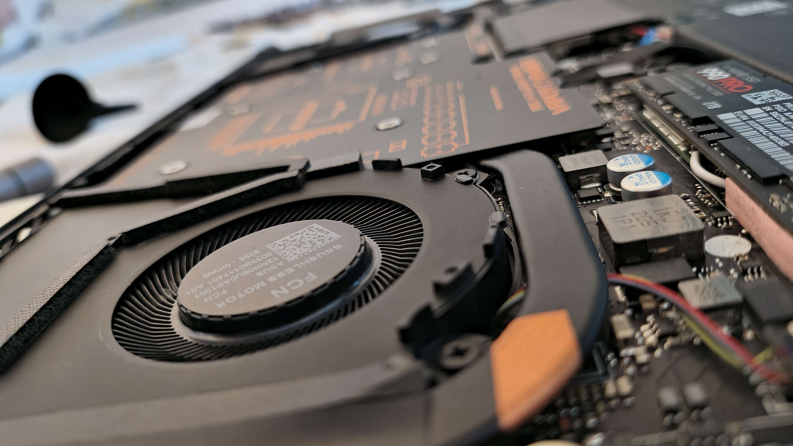
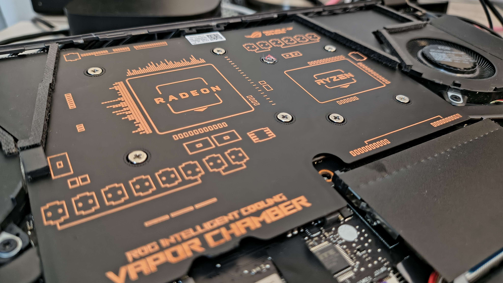
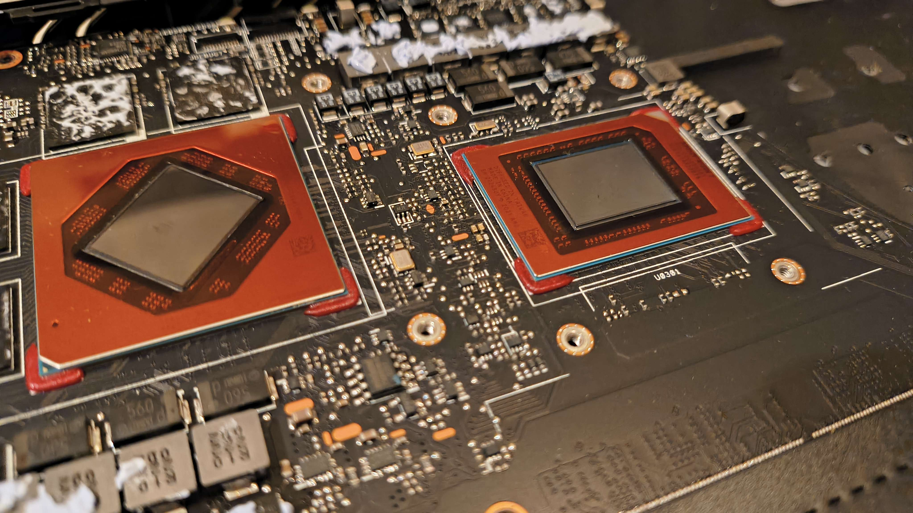
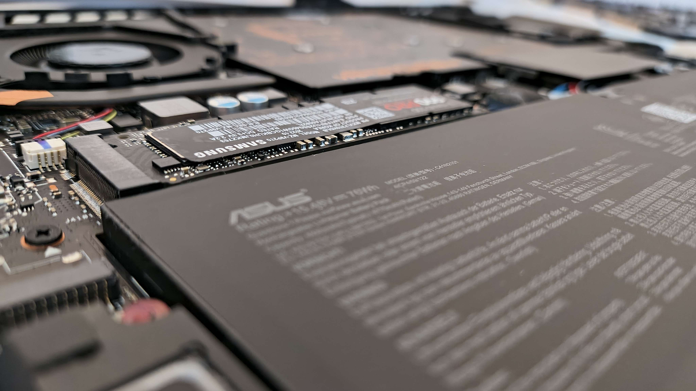
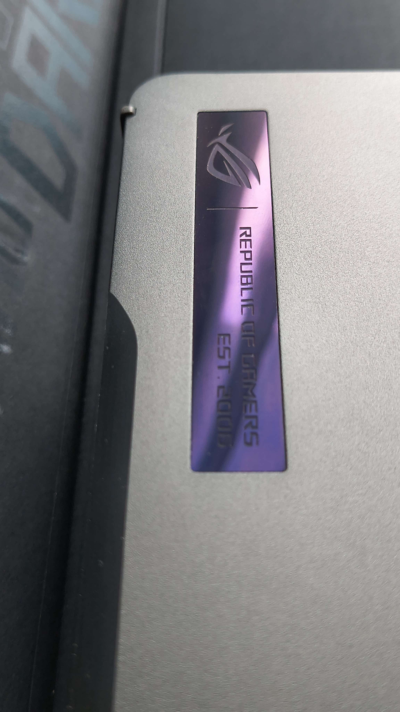
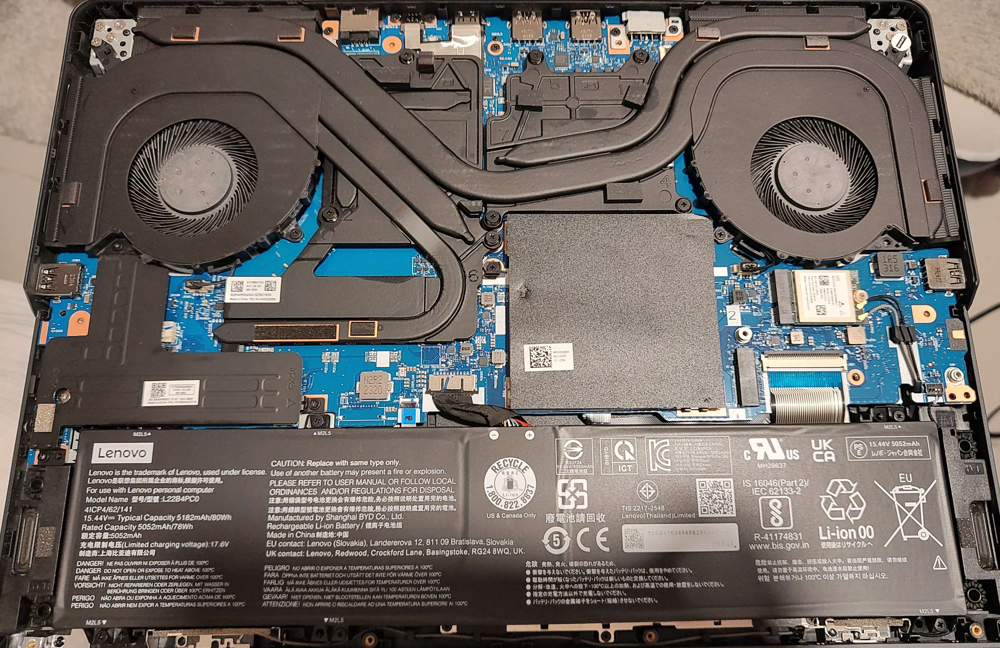
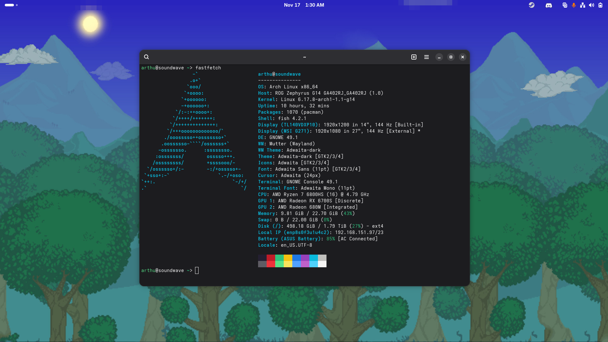
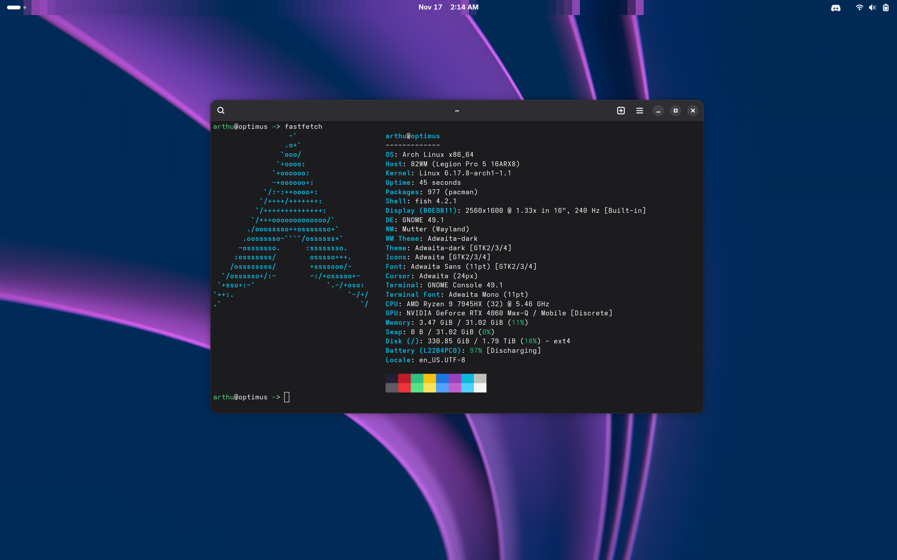

Quick Introduction
Here you'll find insights into my interests, what fuels my creativity, and why I love that I'm passionate about Hardware & Systems.
Links embedded on this page: Dotfiles

Hardware & Systems
Visual Showcase





My Experience
Let's rewind to 2011.
My old laptop becomes obsolete, and I need to build myself a computer. My father, who shares my passion for technology, jumps in to help. That's precisely where this all began.
I already loved video games as a child, I was exposed to them early. The next step on this journey was simple: I needed to see how the magic happened behind the scenes.
Fast forward a bit, and you'll find me opening everything with a backplate and screws. My controller's pressing random inputs? Let's see what's up.
My console starts making sounds it shouldn't? No problem, we'll figure it out.
The guidance I received from my family's expertise, combined with my determination to teach myself and satisfy my curiosity about how things worked, shaped the foundation of my current skillset.
What do I mean by skillset? Where has this all led?
- Strong understanding of hardware functionality and maintenance.
- Practical skills, attention to detail, and technical intuition.
- Commitment to anti-obsolescence and Right-to-Repair principles.
- Advocacy for open-source solutions & a transparent digital world.
But what did I manage to achieve, in a practical sense?
- Built multiple custom PCs using carefully tested and self-refurbished second-hand components.
- Thermal management optimization, cooling system upgrades, short circuit diagnostics, and display panel replacements across various device types.
- Acquired troubleshooting expertise using every opportunity to do hands-on repairs of laptops, consoles, and mobile devices.
Where am I now?
I'm at a point where I'd like to take my passion further, to a professional level. I'd like to keep my love for my passion evolving in a professional environment, somewhere where I can learn and understand advanced techniques in order to continue my journey.
Operating Systems & System Administration
Visual Showcase


My Experience
My passion for operating systems began with Windows tinkering: using PowerShell to tweak File Explorer or editing the registry to disable bloatware, all in pursuit of better performance.
When Windows 11 was released, I felt I was losing control over my own device and privacy. This prompted me to finally give Linux a spin.
I was immediately drawn to Linux's unmatched level of user control. I started distrohopping to understand the differences: immutable, bleeding-edge, LTS, etc. This journey pushed me to learn how the OS pieces fit together, leading me through my first Arch installation, my first Gentoo compile, and the discovery of Linux From Scratch and FreeBSD.
My skills were forged by necessity. My laptop had an unfortunate hardware combination: bleeding-edge components paired with Nvidia proprietary drivers. This setup became a constant source of instability.
After more than 500 hours of deep debugging, hardware monitoring, modprobe, environment, compositor rules, checking bug report forums, and kernel-level troubleshooting, I had pushed those drivers to their absolute limit.
While the hardware's core issues were unfixable, that single experience taught me skills unwritten anywhere. It taught me how to truly control my device on a software level, how to properly maintain a complex system, and how to methodically optimize for any use case.
That hands-on knowledge includes and isn't limited to:
- Kernel Management: Arguments, modules, and custom builds.
- Bootloader Modifications & Systemd Service Tuning.
- High-Performance Virtualization: Libvirt, CPU pinning, and VFIO passthrough.
- System Optimization: Managing custom architecture repositories (like ALHP) & makeconf flags for individual processors.
For those interested, I keep the dotfiles for my current setup documented as a GitHub project.